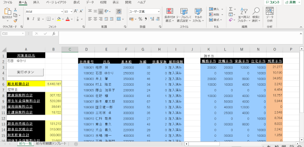
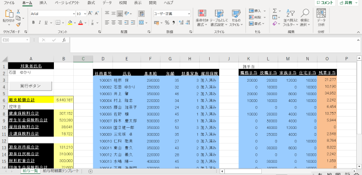

対象の社員名を入力し、実行ボタンを押すことで、自動で給与明細書を作成することができます。
URL
プログラムの目的
特定の社員を大量の社員データの中から手動で見つけ出し、明細書に詳細データを入力する手間を省くため
ターゲット
社員
使用言語
VBA(Visual Basic for Application)

対象の社員名を入力し、実行ボタンを押すことで、自動で給与明細書を作成することができます。
特定の社員を大量の社員データの中から手動で見つけ出し、明細書に詳細データを入力する手間を省くため
社員
VBA(Visual Basic for Application)